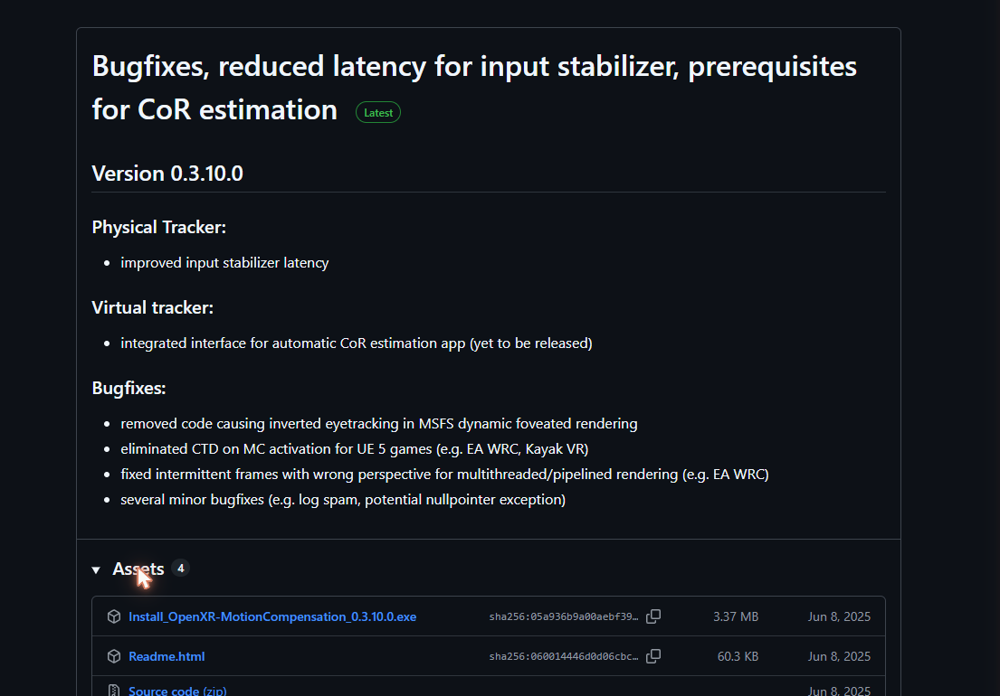
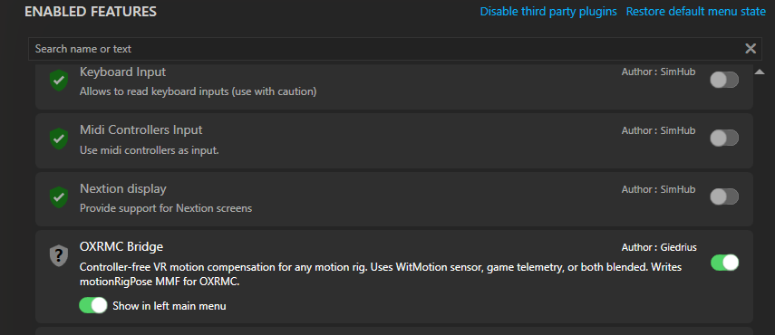
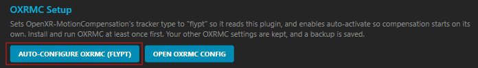
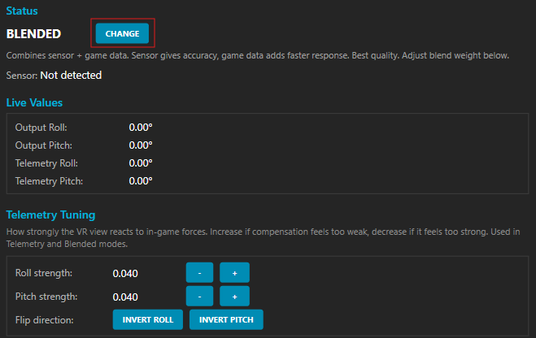
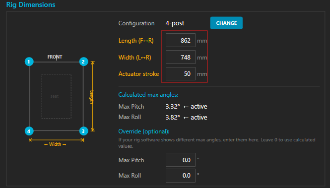
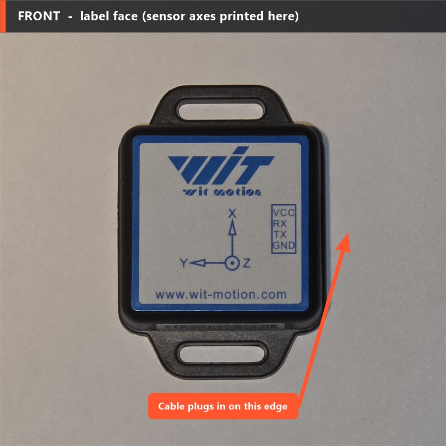
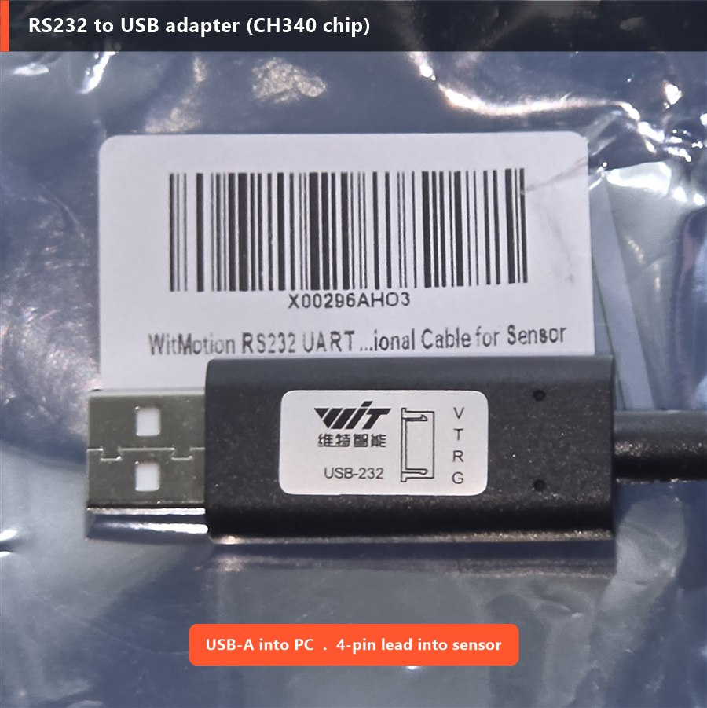
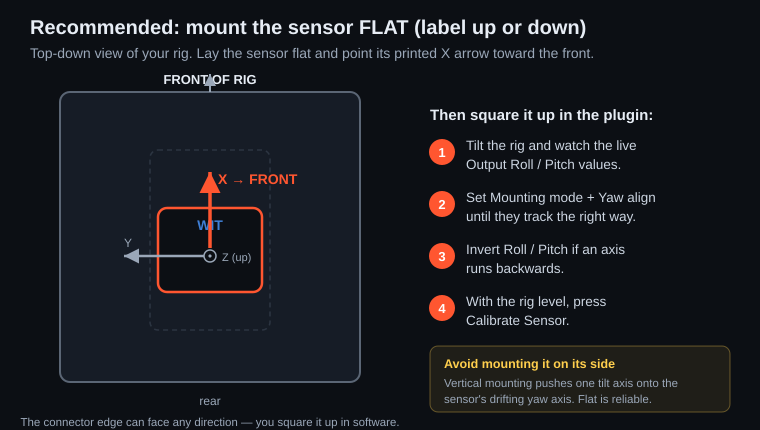

OXRMC Bridge is a free SimHub plugin that feeds your motion rig's real pose straight into OpenXR-MotionCompensation — so your VR view stays locked while the rig moves. No controller to strap on. No controller falling asleep mid-stint.
🔓 Free and open source — the download is a public GitHub release, and you can read the full source before you install.
Requires SimHub (the free 9.x version is fine — no motion-addon license needed) and OpenXR-MotionCompensation. Installs like any other SimHub plugin.
VR motion compensation needs an independent reference for how the rig is moving. The documented trick is to strap a VR controller to the rig — but the controller goes to sleep when idle and drops tracking, and there's no setting to keep it awake.
OXRMC Bridge generates the rig's pose itself and writes it to the shared memory OpenXR-MotionCompensation reads. Nothing to mount, nothing to charge, nothing that sleeps. Set it once and forget it.
A small mounted sensor is the setup I recommend — it measures your platform's real tilt right where your head sits, which is exactly what OXRMC needs to cancel, and after a lot of testing it was the smoothest in every scenario (especially on rough tracks). Two no-hardware fallbacks exist — Sigma (reads a Sigma rig's commanded motion) and Telemetry (a game-based guess) — but neither matches a sensor, so treat them as backups.
| Mode | Source | Accuracy | Requires |
|---|---|---|---|
| Sensor ★ Recommended | WitMotion sensor on the rig | Best — measures real physical tilt at head height | WitMotion WT901C-RS232 + USB adapter |
| Sigma | Your Sigma Integrale rig's own commanded motion | No-sensor fallback — the rig's commanded motion; laggier and shakier, and not the motion at your head | A Sigma Integrale rig; SimHub run as admin |
| Telemetry | Game g-forces via SimHub | Rough estimate — see note below | Nothing extra |
The plugin reads your rig's pitch and roll from whichever source you choose, and can also blend the sensor with either telemetry or Sigma. Everything writes to the motionRigPose shared memory that OXRMC reads with type = flypt.
Telemetry estimates tilt from the game's raw g-forces — but your rig doesn't move on raw g-forces. Motion software (Sigma's, SimHub's, anyone's) runs the game data through its own profile first: washout, tilt-coordination, per-axis scaling, smoothing and travel limits, all adjustable. So what the platform actually does never matches the raw numbers. That's why the Sensor mode — true physical tilt, measured where your head sits — is the accurate one, and the one I recommend. Sigma mode (the rig's own commanded pose) is closer than telemetry, but it still doesn't know where your head is and lags the platform slightly, so both Sigma and telemetry are best treated as no-sensor fallbacks.
Anything SimHub supports, including:
type = flyptEvery rig has its own post spacing, so measure yours and enter length, width, actuator stroke and 3- or 4-post layout in the plugin panel — it calculates your max angles automatically. No rebuilding, no code. (It ships pre-filled with the author's Sigma Integrale DK2 values as an example — just replace them with your own.)
Three quick parts: install OpenXR-MotionCompensation (the tool that actually stabilises your view — this plugin feeds it), install the plugin, then calibrate in VR. About ten minutes the first time.
Grab the latest installer from the official OXRMC releases page — the file named Install_OpenXR-MotionCompensation_<version>.exe.

Run it with your normal gaming Windows account so its settings land in the right place. Accept the default install location (a subfolder of Program Files works for all headsets, including WMR). That's all of Part 1 — OXRMC's config file is created during install.
Close SimHub, then download User.OXRMCBridge.dll and drop it into your SimHub folder (default C:\Program Files (x86)\SimHub\). Start SimHub back up — on first launch it pops up asking to enable the new plugin; click yes and let it restart. (Missed the popup? See step 4.)
If the enable popup didn't appear (or you dismissed it), turn the plugin on by hand: in SimHub click Add/remove features in the left menu → find OXRMC Bridge → toggle it on (also enable Show in left main menu) → restart SimHub when asked.

After restart, OXRMC Bridge appears in the left sidebar. Under OXRMC Setup, click Auto-configure OXRMC (flypt) — it sets the tracker type, turns on auto-activate, and backs up your config. No manual file editing, ever.

For the best result, add a WitMotion sensor — the plugin auto-detects it and runs in Sensor mode (true physical tilt, measured where your head sits). With no sensor it falls back to Telemetry (a g-force estimate) or, on a Sigma Integrale rig, Sigma mode (the rig's commanded motion). There's also a Blended mode — use the CHANGE button to cycle modes.
Either way, the live roll/pitch values start moving once a game is running.

Under Rig Dimensions, pick your post layout (3- or 4-post) and enter your rig's length, width and actuator stroke in mm. The plugin uses these to work out your max pitch/roll — wrong numbers mean wrong compensation limits.

Because the Auto-configure OXRMC step turned on auto-activate, compensation switches itself on a few seconds after your sim loads in VR (OpenXR). There's nothing you have to press. Drive a lap — the rig moves, your horizon stays put. If an axis fights you, use the plugin's Invert Roll / Invert Pitch buttons.
The hotkeys below are optional and belong to OpenXR-MotionCompensation (not this plugin) — only reach for them if you want to re-centre or toggle by hand, with the rig at its neutral resting position:
CTRL+D — show the centre-of-rotation overlay so you can see the reference point and line it up with your seatCTRL+DEL — re-centre / calibrate (sets that reference point to where the rig is right now)CTRL+INS — toggle compensation. Since auto-activate already turned it on, the first press turns it off; press again to turn it back on.The plugin is an unsigned .dll, so Windows SmartScreen may warn you on download — this is normal for free, source-available tools and doesn't mean anything's wrong. The full source is on GitHub if you'd rather build it yourself. Click More info → Run anyway, or right-click the file → Properties → Unblock.
This is the setup I recommend. The plugin can run with no extra hardware (Telemetry, or Sigma mode on a Sigma rig), but after a lot of driving a mounted sensor was the clear winner. Bolt a small sensor to your rig — ideally at seat height, near where your head sits — and it reads your platform's real tilt right there, which is exactly what OXRMC needs to cancel. It's noticeably smoother in every scenario, especially on rough tracks, and it never drifts out of sync. The plugin auto-detects the sensor and switches over on its own.
The wired RS232 model. Not the TTL version, not the RS485 version, and not a Bluetooth (WT901BLE) one — those speak a different interface and the plugin's serial reader won't see them. The sticker on the back of yours should read WT901C232.
A USB-to-serial adapter using the CH340 chip — this is how the sensor plugs into your PC. WitMotion's matching one is labelled USB-232. Windows 10/11 usually installs the CH340 driver automatically.
Hardware links may be affiliate links — see the note at the foot of the page.
Two faces and one edge matter. The label face carries the WIT logo and the printed X / Y / Z axes. The connector edge holds the 4-pin socket (VCC · RX · TX · GND) where the cable plugs in. The back has the model sticker — confirm it reads WT901C232.

Plug the 4-pin lead into the sensor's connector edge, then plug the adapter's USB-A end into your PC. That's the whole connection — the sensor is powered over USB, no batteries.

Lay the sensor flat, label facing up, fixed firmly to the part of the rig that tilts (seat frame or platform) so it can't wobble on its own. Point the printed X arrow toward the front (or rear) of the rig — see the diagram. The connector edge can face any direction; you fine-tune the exact facing in software next, so "flat" doesn't limit where on the rig it goes.

You can't test by tilting the rig by hand — it only moves while you drive. So set it from how you mounted it, then calibrate at rest:
CTRL+DEL in VR).In the plugin, Output Roll/Pitch is what's sent to OXRMC; Telemetry Roll/Pitch is a game-based guess, not the sensor.
If readings wander or jump around, the sensor is almost always too close to a motor, actuator or bass shaker. Move it further away — or to a calmer spot on the frame — then re-zero.
If you run a Sigma Integrale motion rig and don't want to mount a sensor, the plugin can read the rig's own commanded pitch and roll directly — the motion the Sigma software is telling the platform to make. No hardware to buy, no drift, full rate. It works — but it's not as good as a sensor: it doesn't know where your head is and it lags the platform slightly, so it tends to look shakier (usually needing the input stabilizer, which adds latency) and it struggles most on rough tracks. If you can mount a sensor, do — even on a Sigma rig it compensates better.
This is a community tool — not affiliated with, endorsed by, or supported by Sigma Integrale. It only reads your own rig's motion on your own PC to feed OpenXR-MotionCompensation; it doesn't modify or replace any Sigma software, which still does all the driving. "Sigma Integrale" is a trademark of its owner, used here only to describe compatibility.
It works as soon as it's installed, but a couple of OpenXR-MotionCompensation settings are worth knowing — especially if the view looks shaky. Use the plugin's Open OXRMC Config button to edit them, then reload OXRMC with CTRL+SHIFT+L.
This is the #1 fix for a jittery horizon. In the config under [input_stabilizer] set enabled = 1 and strength = 0.5. Higher = smoother but more latency. (OXRMC samples the tracker at ~600 Hz and low-pass filters it.)
Telemetry only estimates tilt from raw g-forces — but your rig reshapes that data with its own motion profile (washout, limits, scaling), so it never quite matches. For the best result use Sensor mode — true physical tilt, measured where your head sits. Sigma mode (the rig's commanded pose) is a no-sensor alternative but usually needs the stabilizer, which adds lag, so a sensor stays smoother overall. The stabilizer above helps any mode.
For more damping, raise [rotation_filter] and [translation_filter] strength from 0 toward ~0.1–0.3. Same trade-off as always: smoother motion, a little more latency. Leave at 0 if it already feels good.
Auto-configure also sets auto_activate = 1, so compensation kicks in by itself after a 10-second countdown — no need to press CTRL+INS every session. You can still toggle it manually with CTRL+INS any time.
I built this for my own rig and I'm sharing it because the sleeping-controller problem drove me nuts too. If it saved you the hassle (or your neck), a coffee keeps the updates coming. Totally optional — enjoy it either way.
☕ Support on Ko-fi